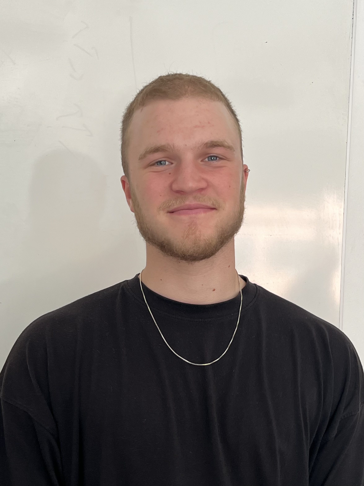
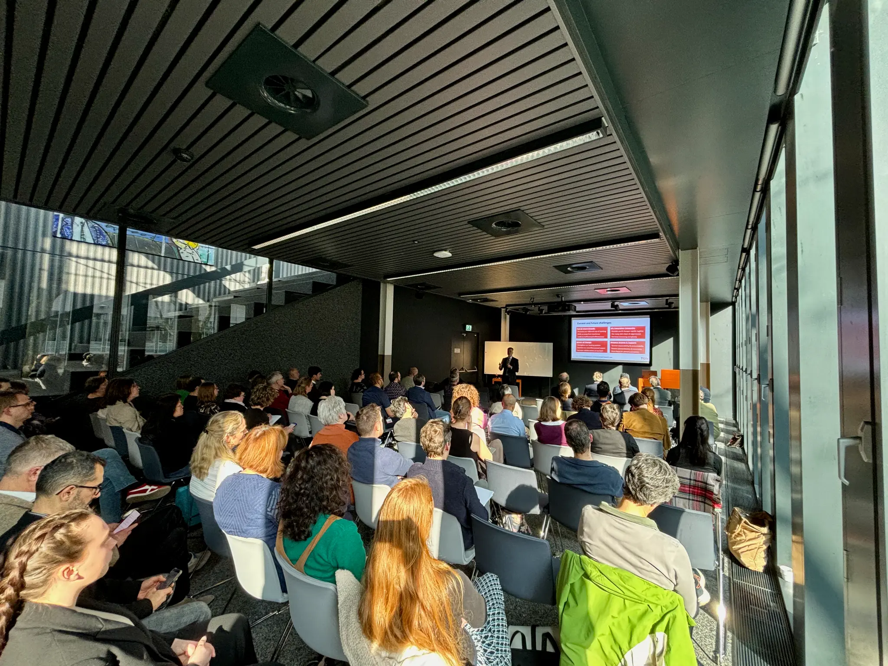

We translated co.built's vision into a meaningful visual identity. Our collaborative process focused on uncovering the core values behind their architectural mission, embedding it functionally inside standard scalable vectors.

Behind the scenes footage of our large production for the brand reveal, focusing purely on authentic capture methodologies that tell the raw story of iteration.

Building scalable solutions for communities that care about the exact same deeply systemic challenges require patience.
Building scalable solutions for communities that care about the exact same deeply systemic challenges require patience.